EXPERIMENT: WET
●Conducting Rolling Circle Amplification and Confirming Results●
As a first experiment, we conducted Rolling Circle Amplification using a template which has a reference sequence. (The method is based on reference[1])1, Preparation of Circularized Template
The circularized template was prepared for use in the RCA.Template DNA (linear state)was formed into a circularized template by ligation connecting template DNA with a splint DNA.
Firstly, we annealed template DNA and splint DNA in the mixture according to the following chart. 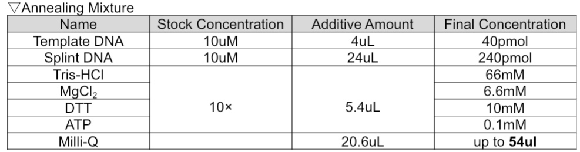
The mixture was heated to 95°C for 1 min and cooled slowly to room temperature over 1h.
After cooling, to connect each end of template DNA by ligation, 6uL of T4 DNA ligase(350 U/uL) was added and the mixture was incubated at 16°C for 16h, and finally inactivated at 65°C for 20 min. (T4 DNA ligase was purchased from Takara)
Following the ligation and inactivation, to remove splint DNA from the circlarized template, exonuclease I and exonuclease I buffer were added into the mixture according to an under chart. (exonuclease I and exonuclease I buffer were purchased from Takara) 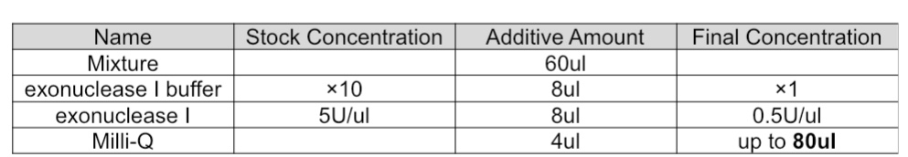
After adding, the mixture was incubated at 25°C for 2h, and ended with inactivation at 65°C for 20 min.
Next, the circularized template was purified by Phenol-Chloroform abstraction （Phenol：Chloroform：Isoamyl alcohol=25：25：1(vol), then ethanol precipitation.
Finally, the purified circularized template was redissolved in 50uL of TE buffer (10mM tris-HCL, 1mM EDTA, pH 8.0).
2, Rolling-Circle-Amplification
RCA was carried out in the mixture containing substances under the chart.・Adjustments are made on ice.
・Phi29 DNA polymerase, TE buffer, and Recombinant Albumin were purchased from New England Biolabs. 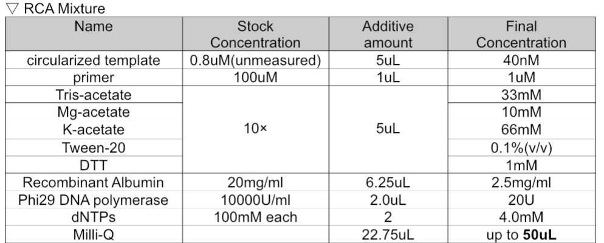
RCA was carried out for 8 hours at 30°C in Thermal Cycler.
After RCA, the RCA Products(RCA-amplified long ssDNA) was purified by Phenol-Chloroform abstraction （Phenol：Chloroform：Isoamyl alcohol=25：25：1(vol), then ethanol precipitation. Then, the Purified RCA Products was redissolved in 100uL TE buffer (10mM tris-HCL, 1mM EDTA, pH 8.0).
3,Measuring the Mass Concentration of RCA Products
After purifying, we measured the mass concentration(ng/uL) of RCA Products by DeNovix spectrophotometer (SCRUM Inc.) and result is 1918.341ng/uL●Folding RCA Products to Create nanoscale DNA Origami●
As a second experiment, we folded RCA products into nanoscale DNA origami with four types of staples. (The method is based on reference[1])1, Folding
The RCA products were folded in the mixture shown in the under chart. 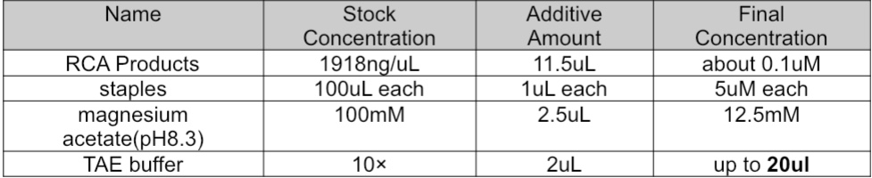
*The molar ratio of RCA product to staple was optimized around 1 to 10 (RCA product：staple = 1：10)
*TAE buffer：40mM Tris-Acetate、2mM EDTA
After adjusting the mixture, the mixture was annealed from 95°C to 20°C in a Thermal Cycler at a rate of 1℃/100s.
After annealing, the mixture was collected and stored at room temperature.
2, AFM Imaging
To confirm the success of folding DNA Origami, we attempted to make observations using AFM.＜Result＞
We ran it multiple times but were unable to observe the DNA origami. However, we obtained an image of a DNA nano flower (under image). It only indicated that RCA resulted in success.

●Confirming hybridization of one section of RCA products and staples●
To supplement the results of the DNA origami folding without AFM results, we conducted folding again, using a short DNA strand which is the length of 96nt. 96nt is a one section of RCA-amplified long ssDNA where a one set of four types of staples can hybridize.※For this experiment and the experiment of confirming DNA Strand Displacement(later mentioned), four types of staples with toehold corresponding to RCA Products(from reference template), those corresponding to New RCA Products(shown in design section), 96nt short DNA(has reference sequence) and new 96nt short DNA(has new sequence shown in design section) were purchased.
※In this experiment, we use four types of staples with toehold instead of staples without toehold(used in previous RCA).
Folding mixtures were adjusted under three groups of charts.
Group①~Reference 96nt short DNA & corresponding staples with toehold
①-1: only 96nt short DNA
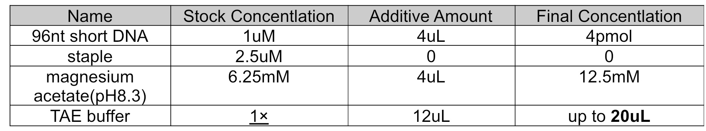
①-2,3,4,5: Reference 96nt short DNA + each corresponding staple(staple1~4)
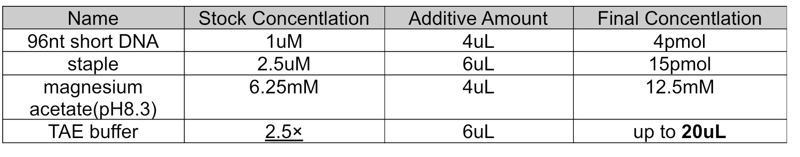
①-6~Reference 96nt short DNA + all staples(1,2,3,4)
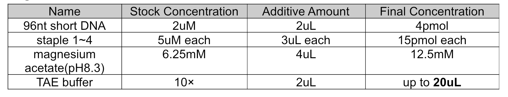
Group②~ New 96nt short DNA & corresponding staples with toehold
-Same numbers and contents as group① were adjusted
After adjusting mixtures (total 12), these mixtures were annealed from 95°C to 20°C in a Thermal Cycler at a rate of 1℃/100s.
After annealing we watched these samples by PAGE (Polyacrylamide Gel Electrophoresis) with samples of next experiments (Confirming DNA Strand Displacement).
●Confirming DNA Strand Displacement●
After annealing mixtures and obtaining 12 samples on a previous experiment, inputs DNA which is completely complementary to corresponding staples were added into 10 of 12 samples based on the under chart. 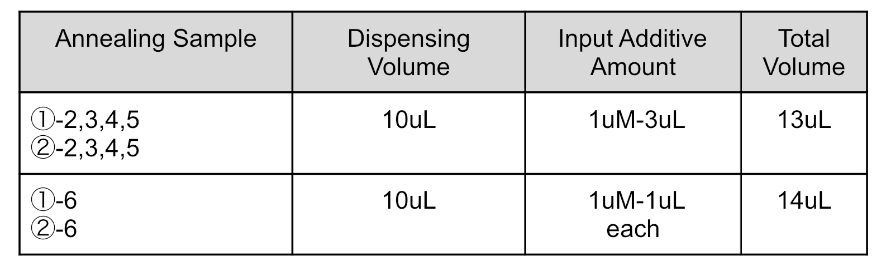Then, a total of 22 samples were obtained, and to cause DNA Strand Displacement, all of the samples were incubated at 37°C for at least 2h.
After reaction, all of the samples were observed by PAGE.
The result of PAGE is shown in the under image.
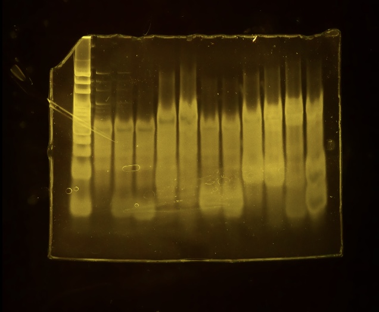
Order: 20bp Marker(Takara), ①-1, ①-2 ①-3, ①-4, ①-5, ①-2 +input, ①-3 +input, ①-4 +input, ①-5 +input, ①-6, ①-6 +input
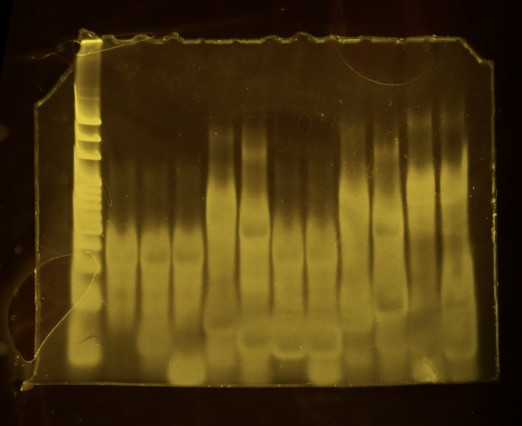
Order: 20bp Marker(Takara), ②-1, ②-2 ②-3, ②-4, ②-5, ②-2 +input, ②-3 +input, ②-4 +input, ②-5 +input, ②-6, ②-6 +input
＜Consideration＞
According to this PAGE results, at least, it can be said that designs of staple-3,4 of each RCA type have validities of hybridizing to RCA products and have abilities of forming origami.
●Confirming Making Network of Two types RCA Products●
Reference RCA products and new RCA products were obtained through previous RCA method.24uL of each RCA producs were dispensed to different tubes, and a 48uL of mixture was adjusted.
Then, three sample was obtained (only reference RCA products tube, only new RCA products tube, and reerence & new RCA products tube).
Next, 1UuL of25×SYBR-Gold was added into each two only rubes, and 2uL of 25×SYBR-Gold was added into the mixture.
In addition, 75uL of Milli-Q water was added into each two only tubes, and 50uL of Milli-Q water was added into the mixture.
Finally, we observed fluorescence of three samples.
The result is the under image 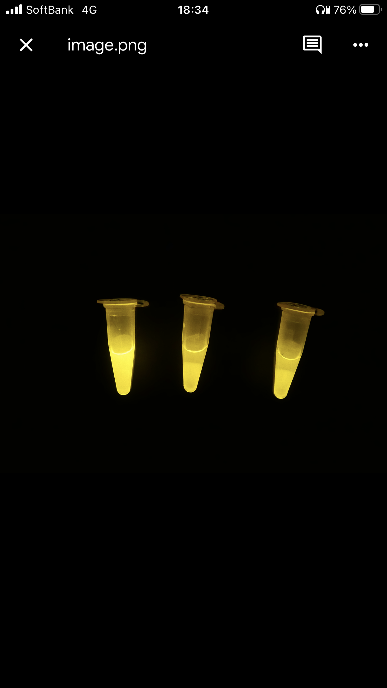
left: Reference & New Mixture, middle: New, right: Reference